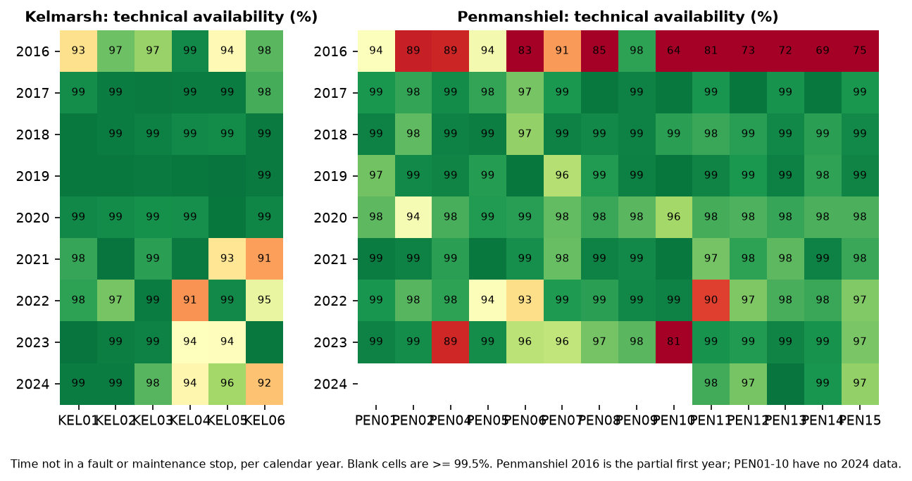
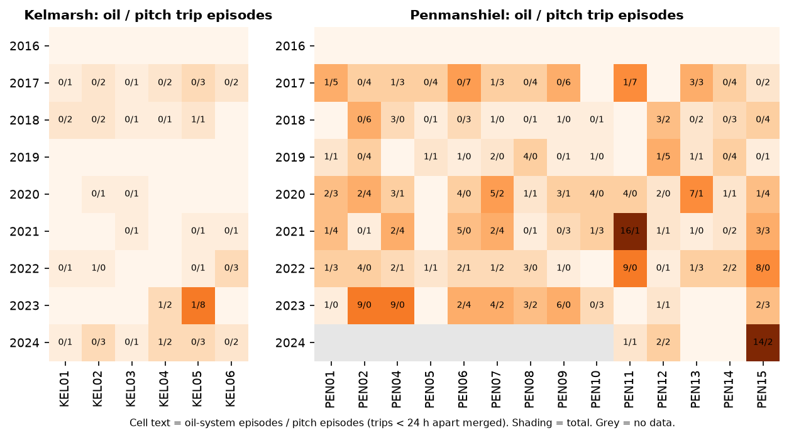
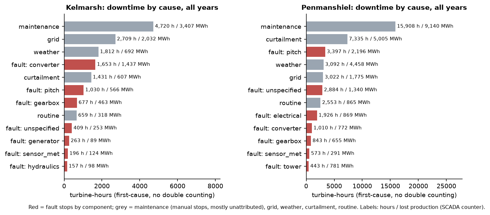
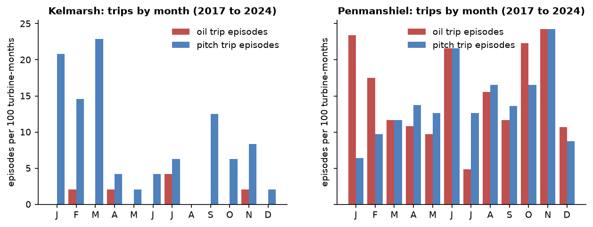
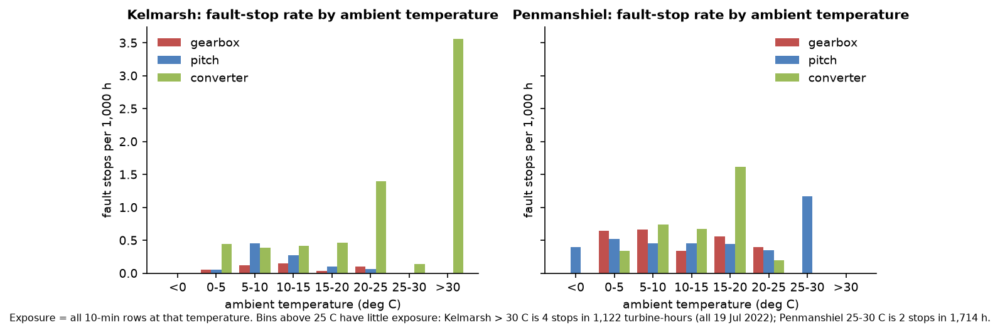
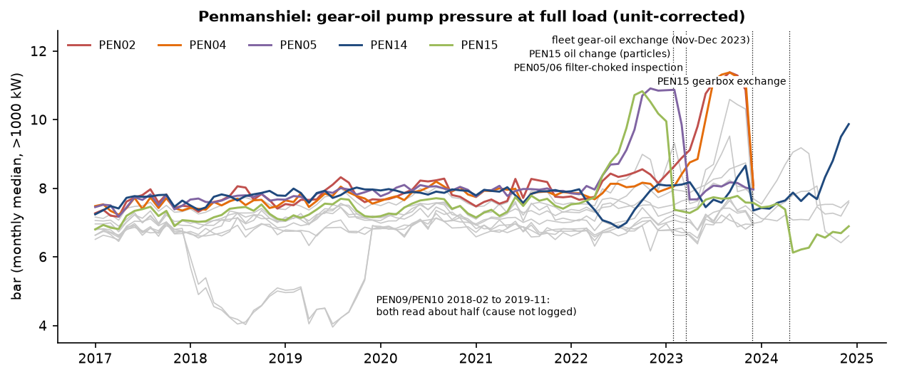
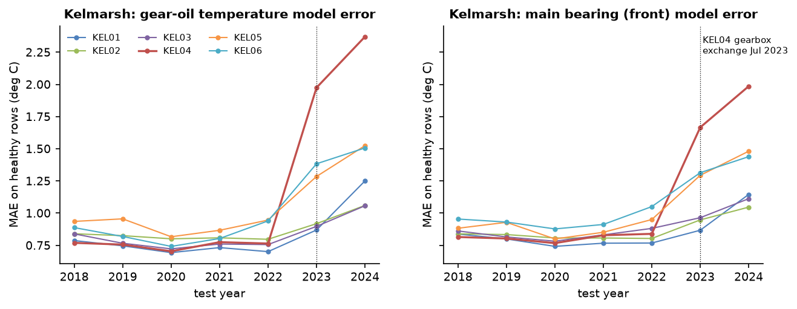

Sites: Kelmarsh (6 x Senvion MM92, 2,050 kW, KEL01 to KEL06) and Penmanshiel (14 x Senvion MM82, 2,050 kW, PEN01, PEN02, PEN04 to PEN15)
Data period:
Data: public 10-minute SCADA and turbine status logs published by Cubico Sustainable Investments on Zenodo (CC BY 4.0). No site visits, no vibration or oil-lab data.
Status: this is a sample of a health-assessment product, built on public data. It is a retrospective condition review, not a failure prediction.
This report is not engineering advice. Every number in it is computed from the public data described in Section 5. Any finding should be checked by a qualified engineer, with site records and inspections, before anyone acts on it.
Assessment window: each turbine's last two full calendar years of data. That is 2023 to 2024 for Kelmarsh and PEN11 to PEN15, and 2022 to 2023 for PEN01 to PEN10.
Column definitions:
| Turbine | Flag | Tech. avail. | Energy avail. | Fault h/yr | Largest fault cause | Oil episodes | Pitch episodes | Repeat share oil / pitch (30 d, all years) | Abnormal oil days, final yr | Pump pressure: baseline to last month (bar) | Oil-temp model error vs 2018-22 |
|---|---|---|---|---|---|---|---|---|---|---|---|
| KEL01 | AMBER | 99.5% | 99.2% | 4 | hydraulics (4 h) | 0 | 1 | - / 25% | 8% | 7.2 to 7.0 | 1.7x |
| KEL02 | GREEN | 99.4% | 98.9% | 9 | pitch (10 h) | 0 | 3 | - / 38% | 2% | 6.6 to 7.1 | 1.3x |
| KEL03 | GREEN | 98.6% | 98.5% | 71 | control_comm (96 h) | 0 | 1 | - / 22% | 2% | 7.0 to 7.2 | 1.4x |
| KEL04 | RED | 93.8% | 92.1% | 330 | converter (407 h) | 2 | 4 | 0% / 22% | 15% | 7.0 to 7.4 | 3.1x |
| KEL05 | RED | 95.2% | 96.2% | 354 | gearbox (370 h) | 1 | 11 | 40% / 39% | 5% | 6.9 to 7.4 | 1.7x |
| KEL06 | AMBER | 95.8% | 95.7% | 234 | generator (234 h) | 0 | 2 | - / 33% | 6% | 7.0 to 6.9 | 1.8x |
| Turbine | Flag | Tech. avail. | Energy avail. | Fault h/yr | Largest fault cause | Oil episodes | Pitch episodes | Repeat share oil / pitch (30 d, all years) | Abnormal oil days, final yr | Pump pressure: baseline to last month (bar) | Oil-temp model error vs 2018-22 |
|---|---|---|---|---|---|---|---|---|---|---|---|
| PEN01 | RED | 99.1% | 97.6% | 39 | pitch (76 h) | 2 | 3 | 10% / 35% | 38% | 7.2 to 7.5 | 1.0x |
| PEN02 | RED | 98.4% | 97.5% | 92 | gearbox (108 h) | 13 | 0 | 41% / 48% | 57% | 7.7 to 8.1 | 1.1x |
| PEN04 | RED | 93.7% | 94.6% | 262 | unspecified (375 h) | 11 | 1 | 61% / 38% | 56% | 7.7 to 8.0 | 0.9x |
| PEN05 | AMBER | 96.6% | 94.6% | 166 | pitch (251 h) | 1 | 1 | 29% / 25% | 12% | 7.8 to 8.0 | 1.0x |
| PEN06 | RED | 94.3% | 91.9% | 143 | pitch (257 h) | 4 | 5 | 12% / 45% | 3% | 7.5 to 7.7 | 1.0x |
| PEN07 | AMBER | 97.2% | 95.4% | 183 | hydraulics (164 h) | 5 | 4 | 26% / 35% | 14% | 7.1 to 7.8 | 1.2x |
| PEN08 | AMBER | 97.9% | 96.5% | 114 | converter (154 h) | 6 | 2 | 36% / 31% | 0% | 6.8 to 6.9 | 0.9x |
| PEN09 | AMBER | 98.5% | 97.3% | 87 | gearbox (119 h) | 7 | 0 | 31% / 50% | 1% | 6.8 to 6.9 | 0.9x |
| PEN10 | RED | 90.3% | 92.4% | 739 | unspecified (1471 h) | 0 | 3 | 50% / 60% | 0% | 6.7 to 7.0 | 0.9x |
| PEN11 | RED | 98.5% | 95.7% | 66 | unspecified (37 h) | 1 | 1 | 50% / 60% | 42% | 6.8 to 6.6 | 1.1x |
| PEN12 | GREEN | 98.0% | 95.4% | 116 | pitch (77 h) | 3 | 3 | 25% / 27% | 1% | 7.1 to 7.6 | 1.1x |
| PEN13 | GREEN | 99.5% | 97.5% | 6 | tower (11 h) | 0 | 0 | 29% / 38% | 1% | 7.2 to 7.6 | 1.2x |
| PEN14 | RED | 98.9% | 97.3% | 38 | electrical (70 h) | 0 | 0 | 0% / 33% | 8% | 7.8 to 9.9 | 1.4x |
| PEN15 | RED | 97.0% | 95.4% | 89 | pitch (71 h) | 16 | 5 | 66% / 40% | 22% | 7.3 to 6.9 | 3.1x |
The flag rules were fixed before the per-turbine results were reviewed. They are simple heuristics, not a calibrated risk score.
RED if any of:
AMBER if any of:
GREEN otherwise.
The context column summarises the operator's free-text log comments. Those comments exist only from 2022 onward.
| Turbine | Flag | Triggered rules | Context from the status-log comments |
|---|---|---|---|
| KEL01 | AMBER | oil-temperature model error 1.7x | Proactive generator NDE bearing replacement in June 2022 (noise detected). Model error rose at all six Kelmarsh turbines (Section 3.4). |
| KEL02 | GREEN | none | NDE bearing stop in November 2022 (48 h). |
| KEL03 | GREEN | none | NDE bearing replacement in May 2023 (26 h). |
| KEL04 | RED | availability 93.8%; 4 pitch episodes; abnormal oil state on 15% of days in 2024; oil-temperature model error 3.1x | 2022: NDE bearing failure (673 h manual stop). Feb 2023: recurrent oil particle alarms, then endoscope inspection. Jul 2023: gearbox exchange (337 h). Jan 2024: busbar failure (390 h). Jul 2024: gear-oil coupling replaced. Abnormal oil days were mostly in the months right after the exchange. They rose again to 17% in Nov 2024 and 42% in Dec 2024 (Section 3.4). |
| KEL05 | RED | 11 pitch episodes; availability 95.2%; oil-temperature model error 1.7x | Gear-oil cooler fan overload stop of 370 h in 2023. "Repeating error BP52" pitch trips: 17 in Sep 2023, 7 in Mar 2024, 17 in Apr 2024. Converter IGBT and fitboard work in May and June 2024. |
| KEL06 | AMBER | availability 95.8%; oil-temperature model error 1.8x | Pitch motor replaced in March 2022 and again in April 2024. Generator speed-sensor connector fault and generator NDE bearing exchange in September 2024. |
| PEN01 | RED | abnormal oil state on 38% of days in 2023 | Pump pressure rose from 7.6 bar (May 2023) to 10.6 bar (Sep 2023) and was back at 7.5 bar after the gear-oil exchange of 27 Nov 2023. Only one month of data follows the exchange. |
| PEN02 | RED | 13 oil episodes; abnormal oil state on 57% of days in 2023 | Pump pressure reached 11.4 bar in Sep 2023, with oil trips through Nov 2023. Back to 8.1 bar after the 27 Nov 2023 oil exchange. One month of post-service data. |
| PEN04 | RED | availability 93.7%; 11 oil episodes; abnormal oil state on 56% of days in 2023 | Pump pressure reached 11.4 bar, with 10 "Low gearbox oil pressure" trips from Aug to Nov 2023. Back to 8.0 bar after the 29 Nov 2023 oil exchange. Generator DE and NDE bearing replacement in May 2023 (410 h). |
| PEN05 | AMBER | availability 96.6%; abnormal oil state on 12% of days in 2023 | Pump pressure reached 10.9 bar in late 2022 and fell to 7.7 bar after the filter-choked gearbox inspection of 17 Mar 2023. Pitch motor replacement in Oct 2022 (251 h). |
| PEN06 | RED | availability 94.3%; 4 oil and 5 pitch episodes | Pitch fault stop of 455 h in June 2022. Pitch motor faults in 2023. |
| PEN07 | AMBER | 5 oil and 4 pitch episodes; abnormal oil state on 14% of days in 2023 | Pump pressure reached 9.5 bar in Sep 2023 and was 7.9 bar in Oct 2023; no service is logged at that drop. Gearbox endoscope inspection in Apr 2023. Pitch motor replacements in Dec 2022 and Jun 2023. |
| PEN08 | AMBER | 6 oil episodes | Recurrent anemometer fault in 2022. Pitch motor exchange in May 2023. |
| PEN09 | AMBER | 7 oil episodes | Gear-oil leak in Jul 2023; hose replaced in Nov 2023. Pressures read about half of normal from Feb 2018 to Nov 2019 (Section 2.2). |
| PEN10 | RED | availability 90.3% | Busbar replacement: one 61-day outage from Mar to May 2023, then software update. Pressures read about half of normal from Feb 2018 to Nov 2019. |
| PEN11 | RED | abnormal oil state on 42% of days in 2024 | 25 oil episodes in 2021 to 2022, then a sun-pinion retrofit (29 days, Nov 2022). Zero oil trips in 2023. Pump pressure rose to 8.1 bar from Mar to Aug 2024 and dropped to 6.7 bar after the gear-oil hose damage repair on 30 Aug 2024. |
| PEN12 | GREEN | none | NDE bearing replacement in Mar 2024. Foundation repairs in Oct 2022. |
| PEN13 | GREEN | none | Pump pressure rose to 9.2 bar in mid-2024 and was back at 7.5 bar from Aug 2024. No service is logged at that drop. |
| PEN14 | RED | pump pressure +2.0 bar in last month | High-speed bearing replacement in Mar 2022, after which inlet pressure stepped down from about 2.6 to 2.0 bar. Pump pressure rose from 7.7 bar (Aug 2024) to 9.9 bar (Dec 2024), and the model z-score reached 3.7 in Dec 2024. Open at the end of the record. |
| PEN15 | RED | 16 oil and 5 pitch episodes; abnormal oil state on 22% of days in 2024; oil-temperature model error 3.1x | Pump pressure reached 10.8 bar in Oct 2022. Oil changed on 26 Jan 2023 ("particles high from sun pinion circlip"). Particle alarms from Jan to Apr 2024. Gearbox exchange in Apr 2024. Then 7 "Missing gear oil (high rpm)" trips in Dec 2024. |


Full per-turbine, per-year counts are in the CSV tables:
tables/stop_counts_<farm>.csv;tables/downtime_by_cause.csv;tables/trip_episodes.csv.| Turbine | Data missing (window) | Longest gap (window) | Invalid or frozen 10-min values, all years | Oil-pressure unit switches (bar/kPa) |
|---|---|---|---|---|
| KEL01 | 0.20% | 6 h | 81 | 4 |
| KEL02 | 0.17% | 6 h | 478 | 2 |
| KEL03 | 0.36% | 25 h | 51 | 2 |
| KEL04 | 0.61% | 27 h | 5,243 | 2 |
| KEL05 | 0.30% | 6 h | 940 | 2 |
| KEL06 | 1.08% | 28 h | 1,293 | 2 |
| Turbine | Data missing (window) | Longest gap (window) | Invalid or frozen 10-min values, all years | Oil-pressure unit switches (bar/kPa) |
|---|---|---|---|---|
| PEN01 | 0.17% | 8 h | 918 | 5 |
| PEN02 | 0.16% | 7 h | 530 | 5 |
| PEN04 | 0.66% | 27 h | 499 | 7 |
| PEN05 | 0.32% | 23 h | 485 | 5 |
| PEN06 | 0.22% | 8 h | 952 | 5 |
| PEN07 | 1.20% | 115 h | 293 | 5 |
| PEN08 | 0.21% | 7 h | 82 | 5 |
| PEN09 | 0.17% | 8 h | 92 | 5 |
| PEN10 | 0.67% | 51 h | 726 | 5 |
| PEN11 | 0.55% | 16 h | 95 | 7 |
| PEN12 | 1.00% | 50 h | 97 | 7 |
| PEN13 | 0.29% | 10 h | 0 | 3 |
| PEN14 | 0.65% | 22 h | 38 | 7 |
| PEN15 | 0.28% | 9 h | 1,509 | 7 |
Oil-pressure units:
Other sensor issues:

Downtime is estimated from the status logs. Each turbine-minute is assigned to the earliest-starting active stop, so overlapping stops are not double counted. Lost production uses the SCADA lost-production-to-downtime counter.
Kelmarsh, 2016 to 2024 (54 turbine-years):
| Cause | Stops | Downtime (turbine-h) | h per turbine-year | Lost production (MWh) | Share of lost production |
|---|---|---|---|---|---|
| maintenance | 1,159 | 4,720 | 87.4 | 3,407 | 31.2% |
| grid | 509 | 2,709 | 50.1 | 2,032 | 18.6% |
| fault: converter | 263 | 1,653 | 30.6 | 1,437 | 13.2% |
| weather | 115 | 1,812 | 33.5 | 692 | 6.3% |
| curtailment | 106 | 1,431 | 26.5 | 607 | 5.6% |
| fault: pitch | 131 | 1,030 | 19.1 | 566 | 5.2% |
| fault: gearbox | 49 | 677 | 12.5 | 463 | 4.2% |
| routine | 3,953 | 659 | 12.2 | 318 | 2.9% |
| no logged stop | 0 | 0 | 0.0 | 275 | 2.5% |
| fault: tower | 316 | 144 | 2.7 | 256 | 2.3% |
| fault: unspecified | 34 | 409 | 7.6 | 253 | 2.3% |
| fault: sensor_met | 298 | 196 | 3.6 | 124 | 1.1% |
| fault: hydraulics | 12 | 157 | 2.9 | 98 | 0.9% |
| fault: generator | 9 | 263 | 4.9 | 89 | 0.8% |
| fault: electrical | 24 | 139 | 2.6 | 88 | 0.8% |
| fault: yaw | 27 | 46 | 0.9 | 72 | 0.7% |
| fault: control_comm | 2 | 96 | 1.8 | 69 | 0.6% |
| fault: brake | 4 | 57 | 1.1 | 35 | 0.3% |
| fault: rotor | 22 | 48 | 0.9 | 26 | 0.2% |
Penmanshiel, 2017 to 2024 (102 turbine-years):
| Cause | Stops | Downtime (turbine-h) | h per turbine-year | Lost production (MWh) | Share of lost production |
|---|---|---|---|---|---|
| maintenance | 2,306 | 8,525 | 83.3 | 5,523 | 24.5% |
| curtailment | 1,096 | 6,894 | 67.4 | 4,630 | 20.6% |
| weather | 4,694 | 3,062 | 29.9 | 4,408 | 19.6% |
| fault: pitch | 299 | 2,969 | 29.0 | 1,845 | 8.2% |
| no logged stop | 0 | 0 | 0.0 | 1,161 | 5.2% |
| grid | 275 | 1,417 | 13.9 | 989 | 4.4% |
| fault: unspecified | 57 | 2,062 | 20.2 | 969 | 4.3% |
| fault: tower | 778 | 435 | 4.3 | 772 | 3.4% |
| fault: converter | 602 | 883 | 8.6 | 727 | 3.2% |
| fault: gearbox | 414 | 736 | 7.2 | 545 | 2.4% |
| fault: electrical | 39 | 596 | 5.8 | 464 | 2.1% |
| fault: sensor_met | 558 | 406 | 4.0 | 192 | 0.9% |
| routine | 8,009 | 1,071 | 10.5 | 159 | 0.7% |
| fault: hydraulics | 1 | 164 | 1.6 | 126 | 0.6% |
| fault: brake | 17 | 13 | 0.1 | 8 | 0.0% |
| fault: yaw | 23 | 3 | 0.0 | 2 | 0.0% |
| fault: rotor | 20 | 4 | 0.0 | 1 | 0.0% |
Kelmarsh:
Penmanshiel:

Rates are per 100 turbine-months, 2017 to 2024. The first operating year is left out because Penmanshiel's commissioning in 2016 gave 33 pitch episodes in November 2016 alone.
Kelmarsh pitch trips:
Penmanshiel oil trips:

Heat:
Cold and ice:
High wind: Penmanshiel's 4,594 "Max. wind speed" stops (2,047 h) are design behaviour, not faults.

Penmanshiel gear-oil pressure:
Other Penmanshiel step changes:

Kelmarsh drift:
These follow from the evidence above and are in rough priority order. They are suggestions for an operator's engineering team to assess, not instructions.
| # | Action | Evidence |
|---|---|---|
| 1 | PEN14: check gear-oil filter condition and take an oil sample. | Full-load pump pressure was 9.9 bar in Dec 2024, against 7.4 to 8.1 bar in December of each year from 2019 to 2023, and it rose every month from Aug to Dec 2024. The model z-score is 3.7, and the model accounts for oil temperature. Six other turbines showed the same build-up before an oil or filter service (Section 3.4). |
| 2 | PEN15: investigate the post-exchange oil trips. | 7 "Missing gear oil (high rpm)" trips in Dec 2024, eight months after the Apr 2024 gearbox exchange. Earlier: particle alarms Jan to Apr 2024, an oil change for circlip particles in Jan 2023, and the highest oil-trip count in the fleet (16 episodes in 2023 to 2024). |
| 3 | Penmanshiel fleet: trend full-load gear-oil pump pressure as a routine maintenance indicator. For example, review a turbine when its monthly median is 1.0 bar above its post-service level for two months. | Seven build-ups in 2022 to 2023 lasted months, and six of them ended at a logged oil or filter service. Oil trips on PEN02 and PEN04 clustered inside their build-ups. This is a monitoring rule to evaluate, not a validated predictor: earlier tests found no reliable 24 to 72 h trip warning in these signals. |
| 4 | PEN01, PEN02, PEN04: confirm that the Nov 2023 oil exchange held. | All three returned to baseline in Dec 2023, but this record has no 2024 data for PEN01 to PEN10. |
| 5 | KEL04: re-baseline condition models on post-exchange data, check the late-2024 oil-signal deviations, and review the converter. | Gear-oil temperature model error was 3.1 times baseline in 2024. Abnormal oil days were 17% in Nov 2024 and 42% in Dec 2024, after being 0 to 4% from May to Oct 2024. 407 h of converter (busbar) downtime in 2024 and 330 fault hours per year in the window. |
| 6 | KEL05: root-cause the recurring pitch "Repeating error BP52". | 44 such trips between Sep 2023 and Apr 2024 (17 in Sep 2023 and 17 in Apr 2024 alone), giving 11 pitch episodes in the window, the most at Kelmarsh. KEL05 also had 239 h of converter downtime in 2024. |
| 7 | KEL06: review the pitch drive. | Pitch motors replaced in Mar 2022 and Apr 2024. Pitch faults cost 415 h in 2022 and 208 h in 2024. |
| 8 | Kelmarsh: explain the 2023 to 2024 model drift before relying on temperature alarms. | Model error rose at all six turbines, not only at KEL04 (Section 3.4). |
| 9 | Kelmarsh: review icing stop logic and anemometer heating. | "Icing (anemometer)" stops total 1,585 h. Recurrent anemometer faults are logged on KEL04 and KEL05 in 2023. |
| 10 | Both farms: fix the data foundations. Log oil pressures in one unit, and record a component on manual stops. | Unit switches in 2018, 2021 and 2022 (Section 2.2). Manual stops carry 31% (Kelmarsh) and 25% (Penmanshiel) of lost production with no component code. |
| 11 | PEN10: review spares and logistics for busbar and switchgear faults. | A single 61-day outage in 2023 (1,471 h), the largest in the record. |
| 12 | PEN09 and PEN10: confirm what changed in pressure measurement from Feb 2018 to Nov 2019. | Both turbines read about half of normal for 22 months, then returned together. |
Data:
Labels:
Availability and downtime:
Condition signals:
Not a failure prediction:
Known limits:
Credits: Kelmarsh and Penmanshiel wind farm data by Cubico Sustainable Investments, published on Zenodo under CC BY 4.0 (DOIs above). This report is an independent analysis and is not endorsed by Cubico.
Reproducibility: the scripts that build this report are in projects/windml/scripts/: condition_metrics.py, condition_scorecard.py, condition_tables.py, condition_figures.py and build_condition_report.py. The computed tables are in reports/condition_report/tables/.
This report is not engineering advice.